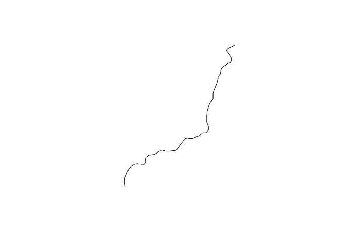

arcgisutils is the foundational infrastructure package that powers the R-ArcGIS Bridge Data and Location Service ecosystem. It provides sophisticated, production-ready tools for interacting with ArcGIS Online, ArcGIS Enterprise, and ArcGIS Platform via their REST APIs.
Key Capabilities
🔐 Comprehensive Authentication:
- Multiple OAuth2 workflows (
auth_code(),auth_client()) - API key and legacy token support
- Automatic token refresh and validation
- Integration with ArcGIS Pro via
arcgisbinding
🌐 Portal Integration:
- Advanced content search with filtering, sorting, and pagination
- User, group, and organization metadata management
- Portal item discovery and content management workflows
⚙️ Geoprocessing Services:
- Support for the geoprocessing service framework built upon R6 and S7
- Enables users to call their own custom geoprocessing services or build on top of existing services
- R6-based job management (
arc_gp_job) with real-time status tracking and built-in result parsing
📄 Esri JSON Ecosystem:
- Bidirectional conversion between R spatial data and Esri JSON formats
- Support for FeatureSets, geometry objects, field definitions, and spatial reference systems
- Optimized parsing with automatic
sfintegration
🛠️ Developer Utilities:
- Standardized HTTP client (
arc_base_req(),arc_paginate_req()) - Robust error detection and user-friendly error messages
- URL parsing, service introspection, and metadata extraction
Installation
arcgisutils is part of the arcgis metapackage, which provides the complete R-ArcGIS Bridge toolkit. For most users, installing the metapackage is recommended:
install.packages("arcgis")You can also install arcgisutils individually from CRAN:
install.packages("arcgisutils")To install the development version:
pak::pak("r-arcgis/arcgisutils")Authentication
Authorization tokens are provided through the functions auth_code(), auth_client(), auth_user(), auth_key(), and auth_binding(). Additional token validation functions are provided via refresh_token() and validate_or_refresh_token().
auth_code() can be used for integrating into Shiny applications, for example, to have individual users log in. We recommend using auth_key() for authenticating in non-interactive environments (for example scheduled scripts or deployments).
Tokens are managed using set_arc_token() and unset_arc_token(). They are fetched using arc_token(). set_arc_token() can set the token globally or set multiple named environments. Here is a minimal example:
library(arcgisutils)
#>
#> Attaching package: 'arcgisutils'
#> The following object is masked from 'package:base':
#>
#> %||%
key <- auth_key()
set_arc_token(key)Alternatively, tokens can be set based on a key-value pair for multiple environments:
set_arc_token("production" = prod_token, "development" = dev_token)And fetched based on their name via
arc_token("production")Portal Integration
Search and discover content across your ArcGIS organization:
# Search for feature services containing "crime" data
crime_items <- search_items(
query = "crime",
item_type = "Feature Service",
max_pages = 1
)
crime_items
#> # A data frame: 50 × 46
#> id owner created modified guid name title type
#> * <chr> <chr> <dttm> <dttm> <lgl> <chr> <chr> <chr>
#> 1 ea0cfe… Toro… 2023-03-28 15:02:39 2025-01-22 18:27:48 NA Neig… Neig… Feat…
#> 2 0a239a… Toro… 2023-03-27 18:59:00 2025-08-06 14:01:27 NA Majo… Majo… Feat…
#> 3 5e055d… JASo… 2023-04-04 17:36:59 2023-09-07 19:05:06 NA <NA> Sher… Feat…
#> 4 64691a… Temp… 2024-01-17 20:01:43 2024-01-17 20:04:45 NA hate… Hate… Feat…
#> 5 7c2b78… JASo… 2023-04-04 17:49:30 2023-06-02 22:27:11 NA <NA> Sher… Feat…
#> 6 e0992d… balt… 2023-07-31 20:27:01 2025-01-22 21:21:01 NA Part… Part… Feat…
#> 7 c749e3… open… 2024-02-23 19:36:34 2025-09-04 17:08:47 NA <NA> Crim… Feat…
#> 8 2cb53d… KASU… 2019-12-10 19:06:39 2019-12-10 19:14:27 NA Viol… Viol… Feat…
#> 9 30644d… MyCi… 2025-03-14 14:55:06 2025-08-20 13:55:24 NA HPD_… HPD … Feat…
#> 10 5dc4e6… iwat… 2023-06-23 22:07:21 2023-08-09 15:33:46 NA <NA> Prop… Feat…
#> # ℹ 40 more rows
#> # ℹ 38 more variables: typeKeywords <list>, description <chr>, tags <list>,
#> # snippet <chr>, thumbnail <chr>, documentation <lgl>, extent <list>,
#> # categories <list>, spatialReference <chr>, accessInformation <chr>,
#> # classification <lgl>, licenseInfo <chr>, culture <chr>, properties <list>,
#> # advancedSettings <lgl>, url <chr>, proxyFilter <lgl>, access <chr>,
#> # size <int>, subInfo <int>, appCategories <list>, industries <list>, …
# Get detailed item information for a portal item
arc_item(crime_items$id[1])
#> <PortalItem<Feature Service>>
#> id: ea0cfecdb1de416884e6b0bf08a9e195
#> title: Neighbourhood Crime Rates Open Data
#> owner: TorontoPoliceServiceDeveloper Utilities
Always use arc_base_req() as this will handle setting the user agent and authorization token. The function creates a standardized httr2 request object:
# defaults to arcgis.com
host <- arc_host()
req <- arc_base_req(host)
req
#> <httr2_request>
#> GET https://www.arcgis.com
#> Body: empty
#> Options:
#> * useragent: "arcgisutils v0.3.3.9000"To handle paginated services and requests use arc_paginate_req() to automatically handle fetching pages.
Esri JSON
There are also a number of utility functions for creating and parsing Esri JSON. For example we can create an Esri FeatureSet json string using as_esri_featureset() directly from an sf object.
library(sf)
# load the NC SIDS dataset and extract centroids
# of the first few rows
nc <- system.file("shape/nc.shp", package = "sf") |>
st_read(quiet = TRUE) |>
st_centroid()
# convert to json
nc_json <- as_esri_featureset(nc[1:2, 1:3])
jsonify::pretty_json(nc_json)
#> {
#> "geometryType": "esriGeometryPoint",
#> "spatialReference": {
#> "wkid": 4267
#> },
#> "features": [
#> {
#> "geometry": {
#> "x": -81.4982290095261,
#> "y": 36.43139560823758
#> },
#> "attributes": {
#> "AREA": 0.114,
#> "CNTY_": 1825.0,
#> "PERIMETER": 1.442
#> }
#> },
#> {
#> "geometry": {
#> "x": -81.12512977849917,
#> "y": 36.49110847237506
#> },
#> "attributes": {
#> "AREA": 0.061,
#> "CNTY_": 1827.0,
#> "PERIMETER": 1.231
#> }
#> }
#> ]
#> }Feature set json can also be parsed using parse_esri_json().
parse_esri_json(nc_json)
#> Simple feature collection with 2 features and 3 fields
#> Geometry type: POINT
#> Dimension: XY
#> Bounding box: xmin: -81.49823 ymin: 36.4314 xmax: -81.12513 ymax: 36.49111
#> Geodetic CRS: NAD27
#> AREA CNTY_ PERIMETER geometry
#> 1 0.114 1825 1.442 POINT (-81.49823 36.4314)
#> 2 0.061 1827 1.231 POINT (-81.12513 36.49111)Additionally, sf’s crs object can be converted to a spatialReference JSON object using validate_crs(). Convert these to json with yyjsonr or jsonify.
crs <- validate_crs(27700)
jsonify::pretty_json(crs, unbox = TRUE)
#> {
#> "spatialReference": {
#> "wkid": 27700
#> }
#> }Geoprocessing Services
The geoprocessing service framework is completely supported in arcgisutils. Here we combine the functionality of the geoprocessing job framework with utilities such as as_esri_featureset() to call the Trace DownStream Elevation Service
trace_downstream <- function(
input_points,
point_id_field = NULL,
resolution = NULL,
generalize = FALSE,
token = arc_token()
) {
# create a list of parameters
params <- compact(list(
InputPoints = as_esri_featureset(input_points),
PointIdField = point_id_field,
DataSourceResolution = resolution,
Generalize = as.character(generalize),
f = "json"
))
service_url <- "https://hydro.arcgis.com/arcgis/rest/services/Tools/Hydrology/GPServer/TraceDownstream"
arc_gp_job$new(
base_url = service_url,
params = params,
result_fn = parse_gp_feature_record_set,
token
)
}This new function can be called to start a new job:
# create input points
input_points <- st_sfc(
st_point(c(-159.548936, 21.955888)),
crs = 4326
)
# initialze an empty job
job <- trace_downstream(
input_points,
token = auth_user()
)
# start the job
job$start()
#> <arc_gp_job>
#> Job ID: jd9f76de1e62e4d8a877f3e6859fdb7b2
#> Status: not started
#> Resource: /TraceDownstream
#> Params:
#> • InputPoints
#> • Generalize
#> • fJobs run asynchronously so we can check the status with job$status
job$status
#> <arcgisutils::arc_job_status>
#> @ status: chr "esriJobSubmitted"Then, when the job is complete, we can fetch the results applying the result function which is parse_gp_feature_record_set() in this case.
job$results
#> $param_name
#> [1] "OutputTraceLine"
#>
#> $data_type
#> [1] "GPFeatureRecordSetLayer"
#>
#> $geometry
#> Simple feature collection with 1 feature and 6 fields
#> Geometry type: MULTILINESTRING
#> Dimension: XY
#> Bounding box: xmin: 438895 ymin: 2422310 xmax: 443325 ymax: 2428045
#> Projected CRS: NAD83 / UTM zone 4N + Unknown VCS
#> OBJECTID PourPtID Description DataResolution LengthKm
#> 1 1 1 NED 10m processed by Esri 10.0 9.489823
#> Shape_Length geometry
#> 1 9489.823 MULTILINESTRING ((443325 24...
# store and view the results
res <- job$results
res
#> $param_name
#> [1] "OutputTraceLine"
#>
#> $data_type
#> [1] "GPFeatureRecordSetLayer"
#>
#> $geometry
#> Simple feature collection with 1 feature and 6 fields
#> Geometry type: MULTILINESTRING
#> Dimension: XY
#> Bounding box: xmin: 438895 ymin: 2422310 xmax: 443325 ymax: 2428045
#> Projected CRS: NAD83 / UTM zone 4N + Unknown VCS
#> OBJECTID PourPtID Description DataResolution LengthKm
#> 1 1 1 NED 10m processed by Esri 10.0 9.489823
#> Shape_Length geometry
#> 1 9489.823 MULTILINESTRING ((443325 24...
# plot the resultant geometry
plot(st_geometry(res$geometry))
Learn More
To learn more about the R-ArcGIS Bridge project visit the developer documentation.